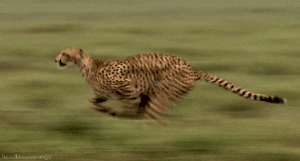
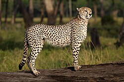
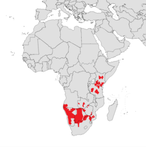
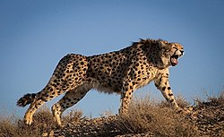
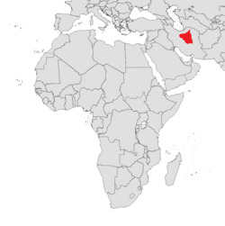
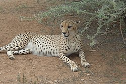
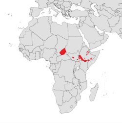
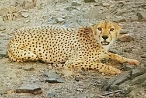

Cheetah
The cheetah (Acinonyx jubatus) is a large cat and the fastest land animal. It has a tawny to creamy white or pale buff fur that is marked with evenly spaced, solid black spots. The head is small and rounded, with a short snout and black tear-like facial streaks. It reaches 67–94 cm (26–37 in) at the shoulder, and the head-and-body length is between 1.1 and 1.5 m (3 ft 7 in and 4 ft 11 in). Adults weigh between 21 and 65 kg (46 and 143 lb). The cheetah is capable of running at 93 to 105 km/h (58 to 65 mph); it has evolved specialized adaptations for speed, including a light build, long thin legs and a long tail.
The cheetah was first described in the late 18th century. Four subspecies are recognised today that are native to Africa and central Iran. An African subspecies was introduced to India in 2022. It is now distributed mainly in small, fragmented populations in northwestern, eastern and southern Africa and central Iran. It lives in a variety of habitats such as savannahs in the Serengeti, arid mountain ranges in the Sahara, and hilly desert terrain.
Etymology
The vernacular name "cheetah" is derived from Hindustani Urdu: چیتا and Hindi: चीता (ćītā).[3]This in turn comes from Sanskrit: चित्रय (Chitra-ya) meaning 'variegated', 'adorned' or 'painted'.[4] In the past, the cheetah was often called "hunting leopard" because they could be tamed and used for coursing.[5] The generic name Acinonyx probably derives from the combination of two Greek words: ἁκινητος (akinitos) meaning 'unmoved' or 'motionless', and ὄνυξ (onyx) meaning 'nail' or 'hoof'.[6] A rough translation is "immobile nails", a reference to the cheetah's limited ability to retract its claws.[7] A similar meaning can be obtained by the combination of the Greek prefix a– (implying a lack of) and κῑνέω (kīnéō) meaning 'to move' or 'to set in motion'.[8] The specific name jubatus is Latin for 'crested, having a mane'.[9]
A few old generic names such as Cynailurus and Cynofelis allude to the similarities between the cheetah and canids.[10]
Taxonomy
In 1777, Johann Christian Daniel von Schreber described the cheetah based on a skin from the Cape of Good Hope and gave it the scientific name Felis jubatus.[11] Joshua Brookes proposed the generic name Acinonyx in 1828.[12] In 1917, Reginald Innes Pocock placed the cheetah in a subfamily of its own, Acinonychinae,[13] given its striking morphological resemblance to the greyhound and significant deviation from typical felid features; the cheetah was classified in Felinae in later taxonomic revisions.[14]
In the 19th and 20th centuries, several cheetah zoological specimens were described; some were proposed as subspecies.[15] A South African specimen with notably dense fur was proposed as (Felis lanea) by Philip Sclater in 1877 and became known as the "woolly cheetah".[16] Its classification as a species was mostly disputed.[17] There has been considerable confusion in the nomenclature of the cheetah and leopard (Panthera pardus) as authors often confused the two; some considered "hunting leopards" an independent species, or equal to the leopard.[18][19]
Subspecies
In 1975, five cheetah subspecies were considered valid taxa: A. j. hecki, A. j. jubatus, A. j. raineyi, A. j. soemmeringii and A. j. venaticus.[20] In 2011, a phylogeographic study found minimal genetic variation between A. j. jubatus and A. j. raineyi; only four subspecies were identified.[21] In 2017, the Cat Classification Task Force of the IUCN Cat Specialist Group revised felid taxonomy and recognised these four subspecies as valid. Their details are tabulated below:[20]
Phylogeny and evolution
The cheetah's closest relatives are the cougar (Puma concolor) and the jaguarundi (Herpailurus yagouaroundi).[20] Together, these three species form the Puma lineage, one of the eight lineages of the extant felids; the Puma lineage diverged from the rest 6.7 mya. The sister group of the Puma lineage is a clade of smaller Old World cats that includes the genera Felis, Otocolobus and Prionailurus.[30]
The oldest cheetah fossils, excavated in eastern and southern Africa, date to 3.5–3 mya; the earliest known specimen from South Africa is from the lowermost deposits of the Silberberg Grotto (Sterkfontein).[2][8] Though incomplete, these fossils indicate forms larger but less cursorial than the modern cheetah.[31] The first occurrence of the modern species A. jubatus in Africa may come from Cooper's D, a site in South Africa dating back to 1.5 to 1.4 Ma, during the Calabrian stage.[32] Fossil remains from Europe are limited to a few Middle Pleistocene specimens from Hundsheim (Austria) and Mosbach Sands (Germany).[33] Cheetah-like cats are known from as late as 10,000 years ago from the Old World. The giant cheetah (A. pardinensis), significantly larger and slower compared to the modern cheetah, occurred in Eurasia and eastern and southern Africa in the Villafranchian period roughly 3.8–1.9 mya.[14][34] In the Middle Pleistocene a smaller cheetah, A. intermedius, ranged from Europe to China.[2] The modern cheetah appeared in Africa around 1.9 mya; its fossil record is restricted to Africa.[31]
Extinct North American cheetah-like cats had historically been classified in Felis, Puma or Acinonyx; two such species, F. studeri and F. trumani, were considered to be closer to the puma than the cheetah, despite their close similarities to the latter. Noting this, palaeontologist Daniel Adams proposed Miracinonyx, a new subgenus under Acinonyx, in 1979 for the North American cheetah-like cats;[35] this was later elevated to genus rank.[36] Adams pointed out that North American and Old World cheetah-like cats may have had a common ancestor, and Acinonyx might have originated in North America instead of Eurasia.[35] However, subsequent research has shown that Miracinonyx is phylogenetically closer to the cougar than the cheetah;[37] the similarities to cheetahs have been attributed to parallel evolution.[30]
The three species of the Puma lineage may have had a common ancestor during the Miocene (roughly 8.25 mya).[35][38] Some suggest that North American cheetahs possibly migrated to Asia via the Bering Strait, then dispersed southward to Africa through Eurasia at least 100,000 years ago;[39][40][41] some authors have expressed doubt over the occurrence of cheetah-like cats in North America, and instead suppose the modern cheetah to have evolved from Asian populations that eventually spread to Africa.[37][42] The cheetah is thought to have experienced two population bottlenecks that greatly decreased the genetic variability in populations; one occurred about 100,000 years ago that has been correlated to migration from North America to Asia, and the second 10,000–12,000 years ago in Africa, possibly as part of the Late Pleistocene extinction event.[40][43][44]
Genetics
The diploid number of chromosomes in the cheetah is 38, the same as in most other felids.[45] The cheetah was the first felid observed to have unusually low genetic variability among individuals,[46] which has led to poor breeding in captivity, increased spermatozoal defects, high juvenile mortality and increased susceptibility to diseases and infections.[47][48] A prominent instance was the deadly feline coronavirus outbreak in a cheetah breeding facility of Oregon in 1983 which had a mortality rate of 60%, higher than that recorded for previous epizootics of feline infectious peritonitis in any felid.[49] The remarkable homogeneity in cheetah genes has been demonstrated by experiments involving the major histocompatibility complex (MHC); unless the MHC genes are highly homogeneous in a population, skin grafts exchanged between a pair of unrelated individuals would be rejected. Skin grafts exchanged between unrelated cheetahs are accepted well and heal, as if their genetic makeup were the same.[50][51]
The low genetic diversity is thought to have been created by two population bottlenecks from about 100,000 years and about 12,000 years ago, respectively.[40] The resultant level of genetic variation is around 0.1–4% of average living species, lower than that of Tasmanian devils, Virunga gorillas, Amur tigers, and even highly inbred domestic cats and dogs.[48]
Selective retention of gene variants (Duplication) has been found in 10 genes candidates to explain energetics and anabolism related to muscle specialization in cheetahs.[40][48]
- Regulation of muscle contraction (Five genes: ADORA1, ADRA1B, CACNA1C, RGS2, SCN5A).
- Physiological stress response (Two genes: ADORA1, TAOK2).
- Negative regulation of catabolic process (Four genes: APOC3, SUFU, DDIT4, PPARA).
Potentially harmful mutations has been found in a gene related to spermatogenesis (AKAP4). This could explain the high proportion of abnormal sperma in male cheetahs and poor reproductive success in the species.[40][48]
King Cheetah

The king cheetah is a variety of cheetah with a rare mutation for cream-coloured fur marked with large, blotchy spots and three dark, wide stripes extending from the neck to the tail.[52] In Manicaland, Zimbabwe, it was known as nsuifisi and thought to be a cross between a leopard and a hyena.[53] In 1926, Major A. Cooper wrote about a cheetah-like animal he had shot near modern-day Harare, with fur as thick as that of a snow leopard and spots that merged to form stripes. He suggested it could be a cross between a leopard and a cheetah. As more such individuals were observed it was seen that they had non-retractable claws like the cheetah.[54][55]
In 1927, Pocock described these individuals as a new species by the name of Acinonyx rex ("king cheetah").[54] However, in the absence of proof to support his claim, he withdrew his proposal in 1939. Abel Chapman considered it a colour morph of the normally spotted cheetah.[56] Since 1927, the king cheetah has been reported five more times in the wild in Zimbabwe, Botswana and northern Transvaal; one was photographed in 1975.[53]
In 1981, two female cheetahs that had mated with a wild male from Transvaal at the De Wildt Cheetah and Wildlife Centre (South Africa) gave birth to one king cheetah each; subsequently, more king cheetahs were born at the centre.[56] In 2012, the cause of this coat pattern was found to be a mutation in the gene for transmembrane aminopeptidase (Taqpep), the same gene responsible for the striped "mackerel" versus blotchy "classic" pattern seen in tabby cats.[57] The appearance is caused by reinforcement of a recessive allele; hence if two mating cheetahs are heterozygous carriers of the mutated allele, a quarter of their offspring can be expected to be king cheetahs.[58]
Breeds of Cheetah
-
Soviet Swansong
- Scarface
- Sundew
-
Cluster Bomb
- Congo
- Mango
-
Rhode Island Rampager
- Rudy
- Randall
-
Tennessee TomCat
- Thunderbolt
- Old Hickory
-
Weeping Shadow
- Tear jerker
- Dark Spot
-
Spotted Scatman
- Rapper
- Potato Kitten
Back to the Top | About Me | Electrical
Here we practice our symantic HTML! See below :)
Superscripts and Subscripts:
- a2 + b2 = c2
- H2O = Water
- 1/2 + 3/4 = 1 1/4
HTML Entities - special characters requiring special code
Just to name a few...
- < - less than
- > - greater than
- ≤ - less than / equal to
- ≥ - greater than / equal to
- ♥ - heart
- ♣ - club
- ⋄ - diamond
- ♠ - spade
- & - ampersand
| Subspecies | Details | Image | Range map |
|---|---|---|---|
| Southeast African Cheetah | Subspecies genetically diverged from the Asiatic cheetah 67,000-32,000 years ago. As of 2016, the largest population of nearly 4,000 individuals is sparsely distributed in Angola, Botswana, Mozambique, Namibia, South Africa and Zambia. |  |  |
| Asiatic cheetah | Subspecies is confined to central Iran, and is the only surviving cheetah population in Asia. As of 2022, only 12 individuals were estimated to survive in Iran, nine of which are males and three of which are females. |  |  |
| Northeast African cheetah | Subspecies occurs in the norhtern Central African Republic, Chad, Ethiopia and South Sudan in small and heavily fragmented populations; in 2016, the largest population of 238 individuals occurred in the norhtern CAR and southeastern Chad. It diverged genetically from the southeast African cheetah 72,000-16,000 years ago. |  |  |
| Northwest African cheetah | This subspecies occurs in Algeria, Benin, Burkina Faso, Mali and Niger. In 2016, the largest population of 191 individuals occurred in Adrar des Ifoghas, Ahaggar and Tassil n'Ajjer in south-central Algeria and northeastern Mali. Listed as critically endangered on the ICUN Red List. |  |

|